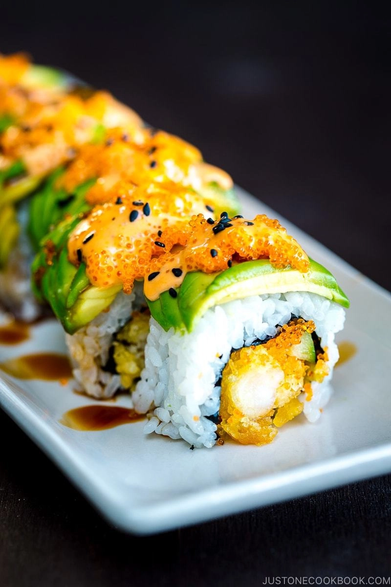

Dragon Roll Recipe

Description
This is a classic Dragon Roll sushi recipe. The crunchy tempura shrimp,
creamy avocado, and delicious combo of sauces make every bite an explosion
of texture and flavor.
This recipe is for one roll. Scale up accordingly to make more rolls.
Ingredients
- 1 cucumber
- 2 avocados
- ½ lemon (optional)
- 2 nori sheets, cut in half crosswise
- About 2 cups prepared sushi rice (each roll needs ½ cup sushi rice)
- 8 shrimp tempura (cooked)
- ⅛ cup (20 oz) Tobiko
- Grilled unagi (eel) (optional)
For toppings
- Spicy Mayo
- Unagi Sauce
- Toasted sesame seeds
- Vinegar water for dipping hands (Tezu)
- ¼ cup water
- 2 tsp. rice vinegar
Steps
- Cut cucumber lengthwise into quarter. Remove the seeds and then cut in half lengthwise.
- Cut the avocado in half lengthwise around the seed and twist the two halves until they
separate. Hack the knife edge into the pit. Hold the skin of the avocado with the other
hand and twist in counter directions. The pit will come out smoothly.
- Remove the skin and slice the avocado widthwise.
- Gently press the avocado slices with your fingers and then keep pressing gently and evenly
with the side of knife until the length of avocado is about the length of sushi roll (length
of nori seaweed). If you don't serve the sushi roll right away, I recommend squeezing lemon
over the avocado to prevent from changing color.
- Wrap the bamboo mat with plastic wrap and place half of the nori sheet, shiny side down. Dip
your hands in tezu (vinegar water) and spread ½ cup sushi rice over the nori sheet.
- Turn it over and put the shrimp tempura, cucumber strips, and tobiko at the bottom end of the
nori sheet. If you like to put unagi, place inside here as well.
- From the bottom end, start rolling nori sheet over the filling tightly and firmly with bamboo
mat until the bottom end reaches the nori sheet. Lift the bamboo mat and roll over.
- Place the bamboo mat over the roll and tightly squeeze the roll.
- Using the side of knife, place the avocado on top of the roll.
- Place plastic wrap over the roll and then put bamboo mat over. Tightly squeeze the roll until
the avocado slices wrap around the sushi. Be gentle so you won’t break the avocado slices.
- Cut the roll into 8 pieces with knife. Clean knife with wet towel after each cut. If the roll
got messy while cutting, tightly squeeze the sushi roll again with the bamboo mat. Remove the
plastic wrap on top of the sushi and transfer to a serving plate.
- Put tobiko on each piece of sushi and drizzle spicy mayo and sprinkle sesame seeds on top. If
you like, put some unagi sauce on the plate so you can dip the sushi.